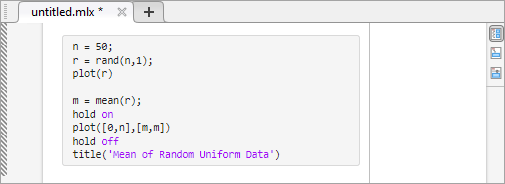
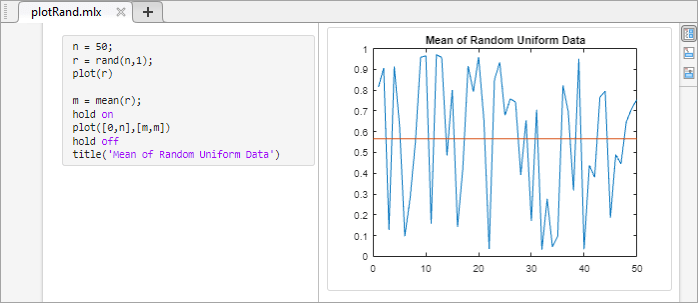
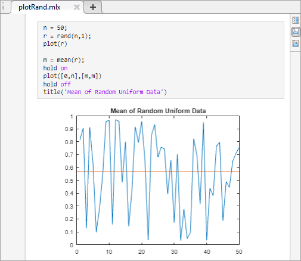
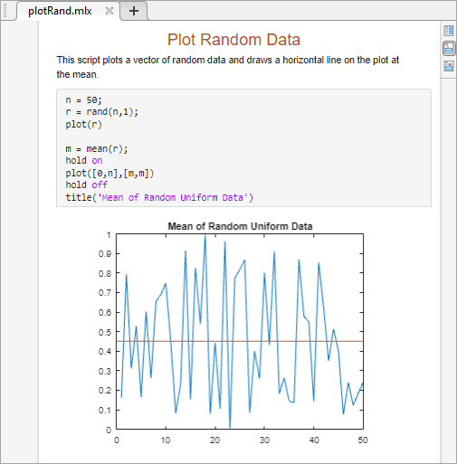

Create Live Scripts in the Live Editor
Live scripts are program files that contain your code, output, and formatted text together in a single interactive environment called the Live Editor. In live scripts, you can write your code and view the generated output and graphics along with the code that produced it. Add formatted text, images, videos, hyperlinks, and equations to create an interactive narrative that you can share with others.
Create Live Script
To create a live script in the Live Editor, go to the Home
tab and click New Live Script
. You also can use the edit
function in the Command Window. For example, type edit penny.mlx
to open or create the file penny.mlx. To ensure that a live
script is created, specify a .mlx extension. If an extension is
not specified, MATLAB® defaults to a file with a .m extension, which
supports only plain code.
If you have an existing script (.m), you can open it as a new
live script in the Live Editor. Opening a script as a live script creates a copy of
the file and leaves the original file untouched. MATLAB converts publishing markup from the original script to formatted
content in the new live script.
To open an existing script as a live script from the Editor, right-click the
document tab, and select Open scriptName as
Live Script from the context menu. Alternatively, go to the
Editor tab and click Save > Save As. Then, set the Save as type to
MATLAB Live Code File (*.mlx) and click
Save. You must use one of the described conversion
methods to convert your script to a live script. Simply renaming the script with a
.mlx extension does not work and can corrupt the file.
Add Code
After you create a live script, you can add code and run it. For example, add this code that plots a vector of random data and draws a horizontal line on the plot at the mean.
n = 50;
r = rand(n,1);
plot(r)
m = mean(r);
hold on
plot([0,n],[m,m])
hold off
title('Mean of Random Uniform Data')

Run Code
To run the code, click the vertical striped bar to the left of the code. Alternatively, go to the Live Editor tab and click Run . While your program is running, a status indicator appears at the top left of the Editor window. A gray blinking bar to the left of a line of code indicates the line that MATLAB is evaluating. To navigate to the line MATLAB is evaluating, click the status indicator.
If an error occurs while MATLAB is running your program or if MATLAB detects a significant issue in your code, the status indicator becomes an error icon . To navigate to the error, click the icon. An error icon to the right of the line of code indicates the error. The corresponding error message is displayed as an output.
You do not need to save your live script to run it.
Display Output
By default, the Live Editor displays output to the right of the code. Each output is displayed with the line that creates it. To change the size of the output display panel, drag the resizer bar between the code and output to the left or to the right.
As you scroll through the code, the Live Editor aligns the output to the code that generates it. To disable the alignment of output to code when output is on the right, right-click the output section and select Disable Synchronous Scrolling.

To clear an output, right-click the output or the code line that created it, and select Clear Output. To clear all output, right-click anywhere in the script and select Clear All Output. Alternatively, go to the View tab and in the Output section, click the Clear all Output button.
To open an individual output such as a variable or figure in a separate window,
click the Open in figure window button  in the upper-right corner of the output. Variables open in the
Variables editor, and figures open in a new figure window. Changes made to variables
or figures outside of a live script do not apply to the output displayed in the live
script.
in the upper-right corner of the output. Variables open in the
Variables editor, and figures open in a new figure window. Changes made to variables
or figures outside of a live script do not apply to the output displayed in the live
script.
To modify figures in the output, use the tools in the upper-right corner of the figure axes or in the Figure toolstrip. You can use the tools to explore the data in a figure and add formatting and annotations. For more information, see Modify Figures in Live Scripts.
Use Keyboard to Interact with Output
You can use the keyboard to interact with output in a live script by moving the focus from the code to the output and then activating the output.
To move focus from the code to the output when output is on the right, press Ctrl+Shift+O. On macOS systems, press Option+Command+O. When output is inline, use the down arrow and up arrow keys. When focus is on an output, activate it by pressing Enter. Once an output is activated, you can scroll text using the arrow keys, navigate through hyperlinks and buttons using the Tab key, and open the context menu by pressing Shift+F10. To deactivate an output, press Esc.
To disable using the keyboard to move focus to the output when output is inline, on the Home tab, in the Environment section, click Settings. Select MATLAB > Editor/Debugger > Display, and clear the Focus outputs using keyboard when output is inline option.
Change View
You can optimize the layout of your live script for your current workflow by changing where to display output and whether to display code in the live script. To change the layout of the live script, go to the View tab, and in the View section, select from the available options. You also can select one of the layout buttons at the top right of the live script.
To change the default location of the output when creating a new live script, on the Home tab, in the Environment section, click Settings. Select MATLAB > Editor/Debugger > Display, and then select a different option for the Live Editor default view.
Output on Right View
In Output on Right view, the Live Editor displays output to the right of the code. Each output displays with the line that creates it. This layout is ideal when writing code.
Output Inline View
In Output Inline view, the Live Editor displays each output underneath the line that creates it. This layout is ideal for sharing.

Hide Code View
In Hide Code view, the Live Editor hides the code and displays only output, labeled controls, tasks, and formatted text. If a task in the live script is configured to show only code and no controls, then the task does not display when you hide the code. This layout is ideal for sharing when you want others to change only the value of the controls in your live script or when you do not want others to see your code.

Format Text
You can add formatted text, images, videos, hyperlinks, and equations to your live
scripts to create a presentable document to share with others. For example, add a
title and some introductory text to plotRand.mlx:
Place your cursor at the top of the live script, and in the Live Editor tab, click Text . A new text line appears above the code.
Click the Select Style button and select
Title.Add the text
Plot Random Data.With your cursor still in the line, click the Align Center button to center the text.
Press Enter to move to the next line.
Type the text
This script plots a vector of random data and draws a horizontal line on the plot at the mean.
For more information, including a list of all available formatting options, see Format Text in the Live Editor.

Save Live Scripts
To save your live script, go to the Live Editor tab, and click Save . Alternatively, use the Ctrl+S keyboard shortcut. Enter a name for your live script and click Save.
By default, MATLAB saves the file using the binary Live Code File Format
(.mlx). For example, go to the Live
Editor tab, click Save
, and enter the name plotRand.
MATLAB saves the live script as plotRand.mlx.
To save the live script using the plain text Live Code File Format
(.m), before clicking Save,
set the Save as type to MATLAB Live
Code File (UTF-8) (*.m). For more information, see Live Code File Format (.m).